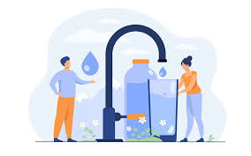

Target 6.1 – Safe Drinking Water
This target aims for fair access to safe drinking water. Local actions include fixing taps quickly, keeping public water points clean and testing supplies so people know they are safe to use.
SDG 6 focuses on clean water, sanitation and protecting the sources that supply this water. These targets are designed to keep people healthy and support long term development.
The targets below are explained in straightforward language so that anyone can get a clear idea of what they involve.
This target aims for fair access to safe drinking water. Local actions include fixing taps quickly, keeping public water points clean and testing supplies so people know they are safe to use.
Good hygiene reduces the spread of disease. Handwashing with soap, access to safe toilets and clean shared facilities all contribute to better health, especially in schools and busy public areas.
This target focuses on improving water quality by cutting pollution. Treating wastewater properly and preventing chemicals or litter from entering rivers and lakes are key practical steps.